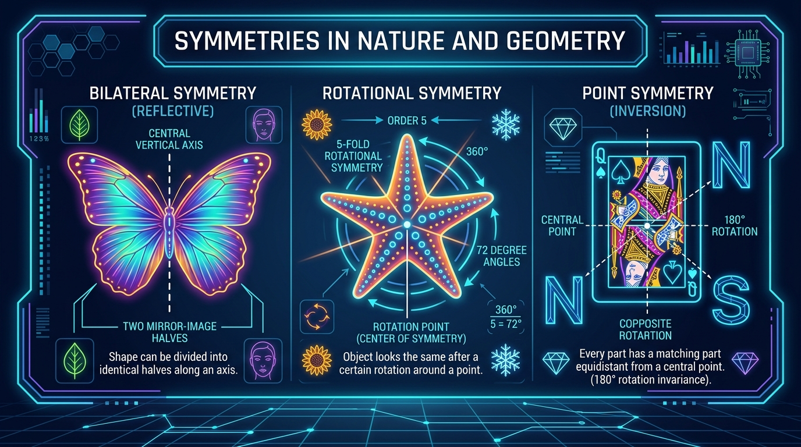
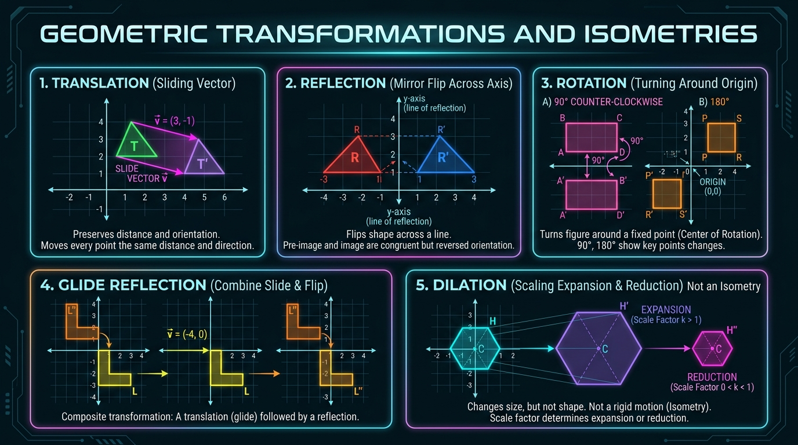
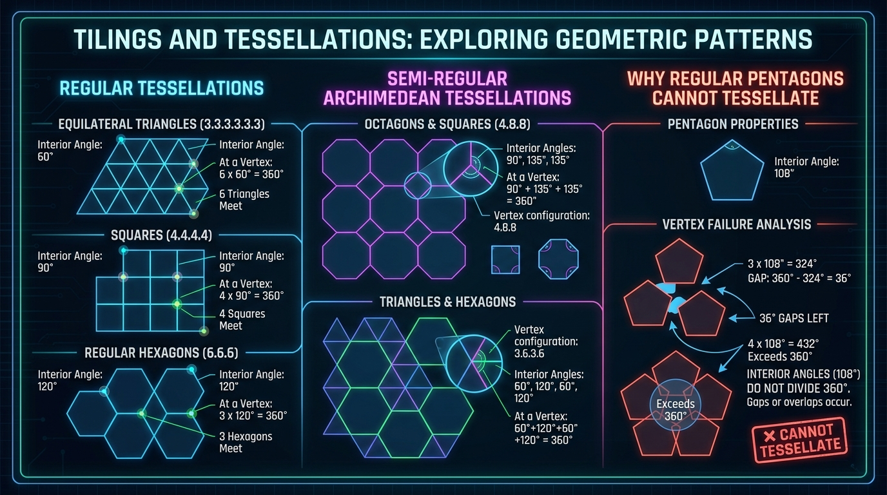
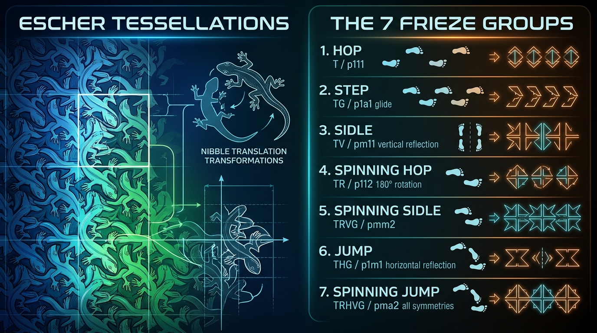
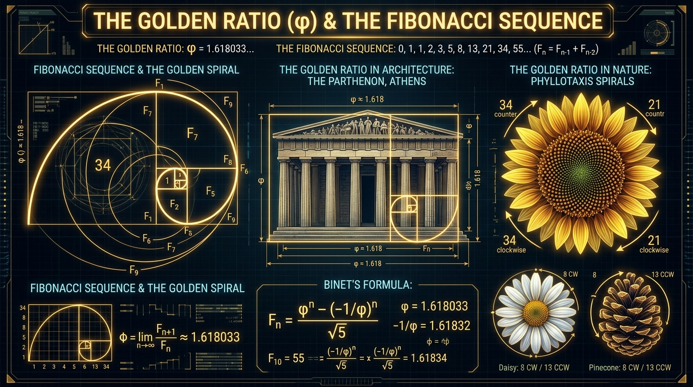
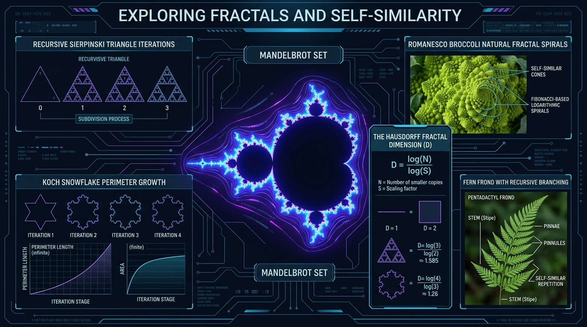
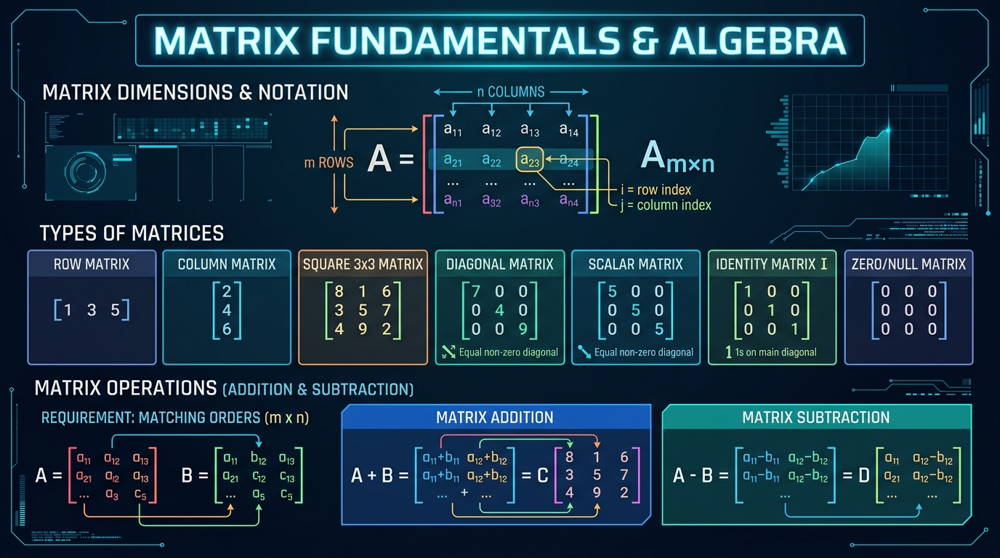
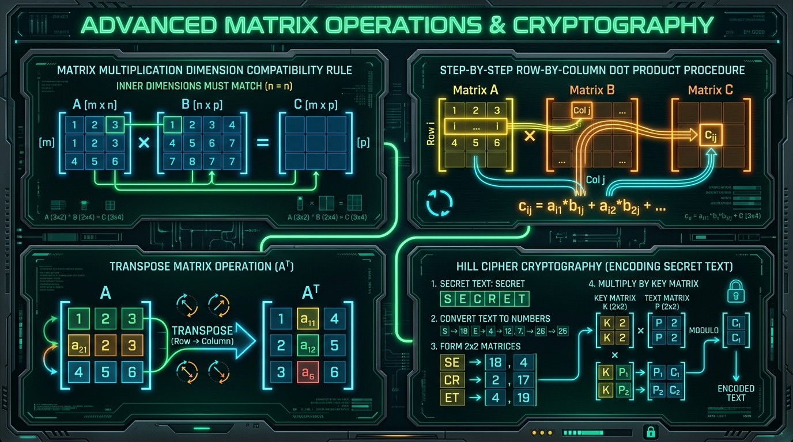
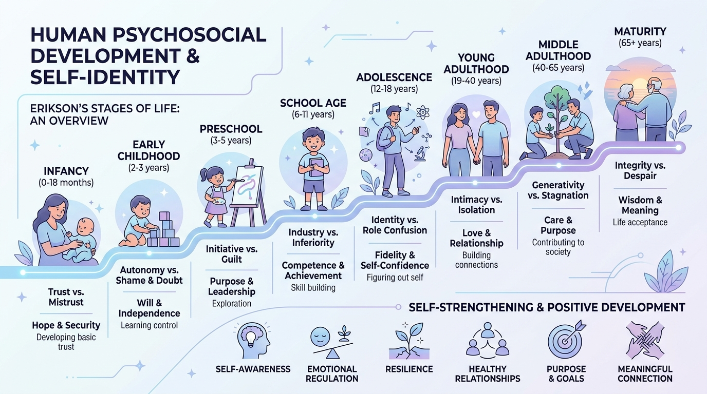
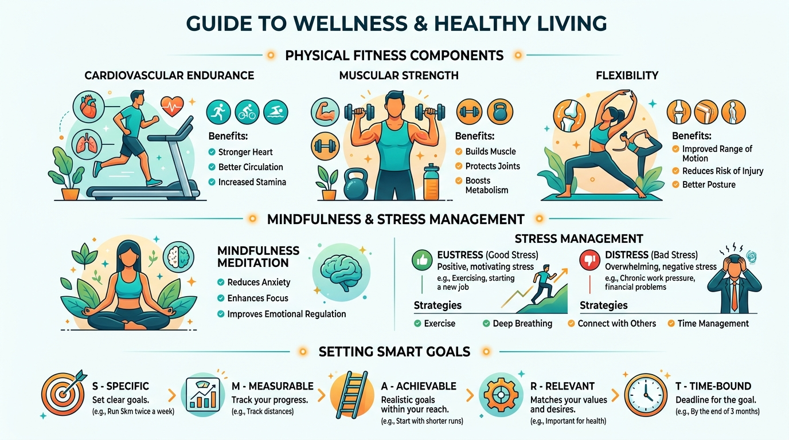

MUJIB REVIEWER
Choose your subject category below to launch the complete interactive exam reviewer.
Finite Mathematics 1
Comprehensive reviewer for Weeks 2 to 9: Symmetries, Transformations, Tilings, Escher Frieze Patterns, Fibonacci, Fractals, and Matrix Cryptography.
Life & Career Skills
Comprehensive reviewer for Lessons 1 to 3: Understanding Self & Erikson's 8 Stages, Physical Fitness & Stress Management, Life Skills & Digital Citizenship.
Finite Mathematics Reviewer Hub
Master Symmetries, Geometric Transformations, Tessellations, Escher Patterns, Fibonacci & the Golden Ratio, Fractals, and Matrix Operations. Features slide definitions, 🧠 quick memory tips, video tutorial links, and an interactive AI step-by-step math fixer!
📚 Lesson Modules & Solvers
8 Exam ModulesSymmetries in Nature & Geometry
Bilateral, Transverse (horizontal line), rotational symmetry, order (n), angle of rotation (360/n), and point symmetry.

Geometric Transformations & Isometries
Isometries (Translations, Reflections, Rotations, Glide Reflections) and Non-Isometries (Dilations with scale factor k).

Tilings and Tessellations
Tiling vs Tessellation, 360° vertex rule, the 3 regular tessellations (3.3.3.3.3.3, 4.4.4.4, 6.6.6), and pentagon proofs.

Escher Tessellations & 7 Frieze Groups
M.C. Escher nibble technique and the complete 7 1D Frieze groups (Hop, Step, Sidle, Spinning Hop, Spinning Sidle, Jump, Spinning Jump).

Fibonacci Sequence & The Golden Ratio
Fibonacci recurrence (F_n = F_n-1 + F_n-2), Golden Ratio (Phi = 1.618), Golden Rectangle, logarithmic spiral, and phyllotaxis.

Fractals & Self-Similarity
Self-similarity, Benoit Mandelbrot, Hausdorff fractal dimension (D = log N / log S), Sierpinski Triangle, and Koch Snowflake.

Matrix Fundamentals & Operations
Order (Rows x Columns), element notation (a_ij), the 8 special matrix types, and same-dimension addition/subtraction rules.

Matrix Multiplication & Cryptography
Scalar multiplication, Transpose (A^T), Row-by-Column dot product, non-commutative law (AB != BA), and Hill Cipher modulo 26.

1. Symmetry
Core ConceptSlide Definition: Symmetry is a balanced and proportionate similarity found between two or more parts of an object. An object is symmetric when one half looks exactly like the other half or stays unchanged after a transformation.
2. Bilateral Symmetry (Line / Mirror Symmetry)
Vertical LineSlide Definition: A type of symmetry where a single line (the line of symmetry or axis of symmetry) divides an object into two identical halves that are mirror images of each other.
3. Transverse Symmetry
Horizontal LineSlide Definition (Slide 29): A symmetry separated by a horizontal line. The top half and the bottom half are mirror images of each other across a horizontal dividing line.
4. Rotational Symmetry (Radial Symmetry)
RotationSlide Definition: A shape has rotational symmetry if it can be rotated around a center point and still look identical to its original position before making a complete 360 degree turn.
5. Order of Rotation (n)
CountSlide Definition: The total number of times an object looks exactly like its original position during one full 360 degree rotation.
6. Angle of Rotation
FormulaSlide Definition: The smallest angle you must rotate an object so that it looks the same as its starting position.
7. Point Symmetry (Origin Symmetry)
180 Degree TurnSlide Definition: Point symmetry exists when every part of an object has a matching part pointing directly opposite through a central point at an equal distance. This is the exact same as a 180 degree rotation (Order 2).
8. Asymmetry
No SymmetrySlide Definition: The complete absence of symmetry. An asymmetrical object cannot be divided into matching halves and looks the same only after a full 360 degree turn (Order = 1).
⭐ Worked Problem 2.1: Starfish Rotational Symmetry Solver
Problem 1Count the identical repeating arms around the center. There are 5 arms.
⟹ Order n = 5.
Use formula:
Angle = 360 / nAngle = 360 / 5 = 72 degrees.
1. Transformation
Core TermSlide Definition: A process that changes the position, shape, or size of a geometric figure. The original shape is called the pre-image, and the resulting new shape is called the image (labeled with prime marks, like A').
2. Isometry (Rigid Motion)
Rigid MotionSlide Definition: A transformation that preserves distance, length, and shape. Under an isometry, the size and shape remain exactly the same (the pre-image and image are congruent).
3. Translation (The Slide)
SlideSlide Definition: Moving an object in space by keeping its size, shape, and orientation constant along a straight line vector.
4. Reflection (The Flip)
FlipSlide Definition: Flipping an object over a line called the line of reflection (mirror line).
• Over x-axis: (x, y) ➔ (x, -y) [Change sign of y]
• Over y-axis: (x, y) ➔ (-x, y) [Change sign of x]
• Over line y = x: (x, y) ➔ (y, x) [Swap x and y]
• Over origin: (x, y) ➔ (-x, -y) [Change signs of both]
5. Rotation (The Turn)
TurnSlide Definition: The motion of an object around a center point or axis by a given degree angle.
• 180 degrees: (x, y) ➔ (-x, -y)
• 270 degrees CCW: (x, y) ➔ (y, -x)
6. Glide Reflection
Two-Step IsometrySlide Definition: A combination of two transformations: a translation (slide) followed by a reflection (flip) across a parallel line.
7. Dilation (Resize)
Size ChangeSlide Definition: A transformation that changes the size of a figure by multiplying both the x-value and the y-value by a scale factor k.
• If k > 1: Enlargement (Image gets bigger)
• If k < 1: Reduction (Image gets smaller)
🔍 Worked Problem 3.1: Dilation of Triangle ABC (From Slides)
Slide Deck ProblemFind the new coordinates when dilated by: (a) Scale factor k = 2, and (b) Scale factor k = 1/2 (0.5).
• A(1, 2) ➔ A'(2 times 1, 2 times 2) = A'(2, 4)
• B(-2, 1) ➔ B'(2 times -2, 2 times 1) = B'(-4, 2)
• C(-4, 3) ➔ C'(2 times -4, 2 times 3) = C'(-8, 6)
• A(1, 2) ➔ A''(0.5 times 1, 0.5 times 2) = A''(0.5, 1)
• B(-2, 1) ➔ B''(0.5 times -2, 0.5 times 1) = B''(-1, 0.5)
• C(-4, 3) ➔ C''(0.5 times -4, 0.5 times 3) = C''(-2, 1.5)
👟 Worked Problem 3.2: Glide Reflection of Triangle ABC (From Slides)
Slide Deck ProblemPerform a translation by vector (-4, 0) followed by a reflection across the x-axis (y = 0).
• A(2, 2) ➔ (2 - 4, 2) = (-2, 2)
• B(4, 6) ➔ (4 - 4, 6) = (0, 6)
• C(5, 4) ➔ (5 - 4, 4) = (1, 4)
• (-2, 2) ➔ A'(-2, -2)
• (0, 6) ➔ B'(0, -6)
• (1, 4) ➔ C'(1, -4)
1. Tiling
General ProcessSlide Definition: Tiling is the general process of covering a flat surface using one or more geometric shapes without leaving any gaps and without any overlaps.
2. Tessellation
Repeating PatternSlide Definition: A tessellation is a repeating arrangement of one or more geometric shapes that covers a plane completely without gaps, without overlaps, and repeats indefinitely. (Comes from the Latin word "tessella" meaning a small tile).
3. The 360 Degree Vertex Rule
Fundamental LawSlide Definition: For shapes to fit together around a single point (vertex) without gaps or overlapping, the sum of all interior angles meeting at that vertex must equal exactly 360 degrees.
4. Regular Tessellation
Only 3 Exist
Slide Definition: A tessellation made of ONLY ONE type of regular polygon. There are strictly ONLY THREE regular tessellations in Euclidean geometry:
1. Equilateral Triangles: 6 triangles at each vertex (6 times 60° = 360°).
2. Squares: 4 squares at each vertex (4 times 90° = 360°).
3. Regular Hexagons: 3 hexagons at each vertex (3 times 120° = 360° - Honeycomb pattern).
5. Semi-Regular (Archimedean) Tessellation
8 ExistSlide Definition: A tessellation made using TWO OR MORE types of regular polygons, where every single vertex has the exact same arrangement of shapes. There are exactly 8 semi-regular tessellations.
6. Dual Tessellation
Centroid ConnectSlide Definition: A new tessellation created by placing a dot at the center of every tile and connecting the centers of adjacent tiles with straight lines.
🛑 Worked Problem 4.1: Proof Why Regular Pentagons CANNOT Tessellate
Proof 1Angle = [ (5 - 2) times 180 ] / 5 = (3 times 180) / 5 = 540 / 5 = 108 degrees.
• 3 Pentagons:
3 times 108 = 324 degrees. (Leaves a gap of 360 - 324 = 36 degrees).• 4 Pentagons:
4 times 108 = 432 degrees. (Overlaps by 72 degrees).
Because 360 cannot be divided evenly by 108 (360 / 108 = 3.33), regular pentagons cannot tessellate!
1. M.C. Escher (1898–1972)
ArtistSlide Definition: A famous Dutch graphic artist celebrated for his mathematically inspired artworks. His most famous tessellation artwork is the "Regular Division of the Plane", featuring interlocking birds, fish, and lizards.
2. The Nibble Technique
Transformation MethodSlide Definition: A method for creating Escher-style tessellations by cutting out a shape from one side of a polygon and attaching it to the opposite or adjacent side using translation, reflection, or rotation. This keeps the total area of the tile unchanged.
3. Frieze Pattern (Border / Strip Pattern)
1D Strip PatternSlide Definition: An infinite decorative border or strip pattern that repeats in one direction (has translation symmetry along a straight line). Derived from classical architecture where sculpted bands decorated temple walls.
4. The 7 Frieze Groups (All 7 Groups Defined)
All 7 TypesThere are strictly 7 types of Frieze patterns based on which symmetries are present:
L L L L or > > > >.
L R L R L R.
A A A A or V V V V.
N N N N or Z Z Z Z or S S S S.
I I I I or H H H H.
B B B B or D D D D or E E E E.
+ + + + or * * * *.
• Hop = 1 foot (T only)
• Step = Walking footsteps (T + Glide)
• Sidle = Sideways mirror (T + Vertical)
• Spinning Hop = Spin (T + 180°)
• Jump = Both feet jumping together (T + Horizontal)
• Spinning Jump = Everything combined!
👣 Worked Problem 5.1: Identifying Frieze Pattern 'B B B B'
Problem 1B B B B.
The top half of letter
B matches the bottom half across the horizontal middle line. ⟹ YES (Horizontal Reflection Present).
Flipping
B left-to-right does NOT give the same letter. ⟹ NO.
Pattern with Translation and Horizontal Reflection is The Jump (p1m1).
1. Fibonacci Sequence
Core Sequence
Slide Definition: A series of numbers where each number is found by adding up the two numbers before it.
• Sequence starts: 0, 1, 1, 2, 3, 5, 8, 13, 21, 34, 55, 89, 144, 233, 377, 610, 987...
2. Leonardo of Pisa (Fibonacci)
HistorySlide Definition: An Italian mathematician who introduced the sequence to Europe in 1202 through his famous book "Liber Abaci" ("Book of Calculation") using the problem of breeding rabbit pairs.
3. The Golden Ratio (Phi = 1.618)
Divine ProportionSlide Definition: The Golden Ratio (often written as Phi) is a special proportion where the ratio of the longer side to the shorter side of a rectangle equals approximately 1.618. Euclid first defined it as dividing a line in the "extreme and mean ratio".
4. Logarithmic Spiral (Golden Spiral)
Spiral CurveSlide Definition: A growth spiral curve that focuses on a center point and revolves outward. It was first described by Rene Descartes and investigated by Jacob Bernoulli. It appears naturally in pinecones, pineapples, hurricanes, snails, sunflowers, and Romanesco broccoli.
5. Golden Angle & Phyllotaxis
Plant BiologySlide Definition: The Golden Angle is approximately 137.5 degrees. Plants use this angle (called phyllotaxis) to arrange seeds, petals, and leaves so that every seed gets maximum sunlight and space without overlapping.
🔢 Worked Problem 6.1: Finding 11th, 15th, 20th, 25th Terms (From Slides)
Slide Deck Problem(1) The 11th term (F_11), (2) The 15th term (F_15), (3) The 20th term (F_20), (4) The 25th term (F_25).
Add 10th term (55) and 9th term (34):
F_11 = 55 + 34 = 89.
Add 14th term (377) and 13th term (233):
F_15 = 377 + 233 = 610.
Add 19th term (4,181) and 18th term (2,584):
F_20 = 4,181 + 2,584 = 6,765.
Add 24th term (46,368) and 23rd term (28,657):
F_25 = 46,368 + 28,657 = 75,025.
1. Fractal
Core TermSlide Definition: A fractal is a geometric figure or natural pattern that exhibits self-similarity, meaning that smaller portions resemble the entire object. It is a pattern made of smaller copies of itself. (Comes from the Latin word "fractus" meaning broken or irregular).
2. Benoit Mandelbrot
Father of FractalsSlide Definition: The mathematician known as the "Father of Fractal Geometry" who discovered the Mandelbrot Set and published "The Fractal Geometry of Nature" in 1982.
3. The 3 Characteristics of Fractals
3 Key Properties
Slide Definition: Every fractal has three main traits:
1. Self-Similarity: Small parts look like the whole shape.
2. Infinite Complexity: New details appear at every level of magnification.
3. Recursion / Iteration: Created by repeating a mathematical rule over and over.
4. Hausdorff Fractal Dimension (D)
Dimension FormulaSlide Definition: A fractional (non-integer) dimension that measures how a fractal fills space when scaled down.
Where: N = number of smaller copies, S = scaling factor
5. Classic Fractals: Sierpinski Triangle & Koch Snowflake
Examples
Slide Definitions:
• Sierpinski Triangle: Formed by repeatedly removing the center triangle from an equilateral triangle. Dimension: D = log(3) / log(2) = 1.585.
• Koch Snowflake: Formed by adding triangular bumps to each side. It has an INFINITE perimeter enclosing a FINITE area! Dimension: D = log(4) / log(3) = 1.262.
🔺 Worked Problem 7.1: Sierpinski Triangle Dimension Solver
Problem 1D = log(N) / log(S) = log(3) / log(2)
D = 0.4771 / 0.3010 = 1.585.
1. Matrix
Core DefinitionSlide Definition: A matrix is a rectangular arrangement of numbers, symbols, or expressions organized systematically into horizontal rows and vertical columns, enclosed within brackets [ ].
2. Order of a Matrix (Dimensions: Rows x Columns)
Matrix SizeSlide Definition: The order (or dimensions) of a matrix is its size, written strictly as Rows x Columns (m x n), where m is the number of horizontal rows and n is the number of vertical columns.
3. Element Position (a_ij)
PositionSlide Definition: The location of a specific number inside a matrix is written as a_ij, where i is the row number and j is the column number.
4. The 8 Special Types of Matrices
8 Slide ClassificationsThe 8 special types of matrices from the slide lessons are:
5. Matrix Addition & Subtraction
OperationsSlide Definition: Adding or subtracting two matrices by combining their corresponding elements.
🔢 Worked Problem 8.1: Matrix Addition & Subtraction (From Slides)
Slide Deck ProblemMatrix A = [ [-2, 1, 0], [-1, 5, 3], [4, 2, 8] ]
Matrix B = [ [3, 6, 11], [9, -5, 2], [1, 4, -8] ]
Matrix C = [ [-1, 13, 2], [10, -8, 5], [-5, 4, -8] ]
Solve for: (1) B + C, and (2) C - A.
• Row 1: [ 3 + (-1), 6 + 13, 11 + 2 ] = [ 2, 19, 13 ]
• Row 2: [ 9 + 10, -5 + (-8), 2 + 5 ] = [ 19, -13, 7 ]
• Row 3: [ 1 + (-5), 4 + 4, -8 + (-8) ] = [ -4, 8, -16 ]
⟹ B + C = [ [2, 19, 13], [19, -13, 7], [-4, 8, -16] ]
• Row 1: [ -1 - (-2), 13 - 1, 2 - 0 ] = [ 1, 12, 2 ]
• Row 2: [ 10 - (-1), -8 - 5, 5 - 3 ] = [ 11, -13, 2 ]
• Row 3: [ -5 - 4, 4 - 2, -8 - 8 ] = [ -9, 2, -16 ]
⟹ C - A = [ [1, 12, 2], [11, -13, 2], [-9, 2, -16] ]
1. Scalar & Scalar Multiplication
Core DefinitionSlide Definition: A scalar is a single real number. To multiply a matrix by a scalar, multiply every single element of the matrix by that scalar. The order (dimensions) of the matrix remains the same.
2. Transpose of a Matrix (A^T)
Swap Rows/ColsSlide Definition: The transpose of a matrix is a new matrix obtained by interchanging the rows and columns of the original matrix (Row 1 becomes Column 1, Row 2 becomes Column 2).
3. Matrix Multiplication (AB)
Dot ProductSlide Definition: Multiplying two matrices together by taking the sum of products of rows of Matrix A by columns of Matrix B (Row-by-Column dot product).
• The inside numbers MUST MATCH (Columns of A = Rows of B)
• The outside numbers give the product size (m x p)
4. Cryptography & The Hill Cipher
Secret CodesSlide Definition: Cryptography is the art and science of protecting information through secret codes. The Hill Cipher encodes alphabet letters into numbers (A=0, B=1, C=2...) and uses 2x2 matrix multiplication modulo 26 to encrypt and decrypt secret messages.
🔢 Worked Problem 9.1: Scalar Operations (From Slides)
Slide Deck ProblemFind: (a) 3A, and (b) (1/2)B.
• [ [3 times 2, 3 times -1], [3 times 3, 3 times 4] ] = [ [6, -3], [9, 12] ]
• [ [0.5 times 4, 0.5 times 6], [0.5 times -2, 0.5 times 0] ] = [ [2, 3], [-1, 0] ]
📊 Worked Problem 9.2: Matrix Multiplication AB (From Slides)
Slide Deck ProblemCalculate the product matrix AB.
Life & Career Skills Reviewer Hub
Master Erikson's 8 Psychosocial Development Stages, Self-Identity, Physical Fitness Components, SMART Goals, Eustress vs. Distress, Mindfulness, Career Optimism, and Digital Citizenship with slide definitions, clean visual diagrams, case solvers, and built-in AI coaching!
📚 LCS Exam Lessons & Scenarios
3 Full ModulesUnderstanding & Strengthening the Self
Key developmental stages, Erikson's 8 Psychosocial Stages & Basic Virtues, Late Adolescence (15-18), Early Adulthood (19-25), Identity Formation vs Crisis, Family, Peers, and Protective vs Risk Factors.

Promoting Physiological Development & Well-being
5 Physical Fitness Components (Cardio, Strength, Endurance, Flexibility, Body Comp), SMART Goal Method, Recreation vs Sports, Stress (Eustress vs Distress), 4 Stress Effect Categories, and 7 Mindfulness Techniques.

Applying Life Skills to Different Domains
Personal Skills (Self-Awareness, Self-Acceptance, Self-Regulation), Career Skills (Self-Determination, Decision-Making, Optimism), Academic Skills (Goal Setting, Time-Management), Digital Skills & Digital Citizenship.
📖 Key Terms & Slide Definitions
Lesson 1 TerminologyKey Developmental Stages
Lifespan ProgressionThe human life cycle spans six primary developmental stages: a. Infancy, b. Childhood, c. Adolescence, d. Early Adulthood, e. Middle Adulthood, and f. Late Adulthood.
Erik Erikson — Psychosocial Development Theory
Core TheoryDescribes eight stages of human growth spanning from infancy to old age. Each stage presents a unique psychological conflict that individuals must resolve, producing a corresponding Basic Virtue upon successful resolution.
📊 Erikson's 8 Stages of Psychosocial Development (Full Slide Table)
Must-Know Exam Table| Stage | Age | Psychosocial Conflict | Basic Virtue | Description |
|---|---|---|---|---|
| 1 | 0 – 1 | Trust vs. Mistrust | Hope | Infants learn to trust caregivers to meet their basic needs. |
| 2 | 1 – 3 | Autonomy vs. Shame and Doubt | Will | Toddlers develop a sense of personal control and independence. |
| 3 | 3 – 6 | Initiative vs. Guilt | Purpose | Children assert control through directing play and social interactions. |
| 4 | 6 – 12 | Industry vs. Inferiority | Competence | Children develop a sense of pride in accomplishments and abilities. |
| 5 ★ | 12 – 18 | Identity vs. Role Confusion | Fidelity | Teens explore personal identity and sense of self. |
| 6 | 18 – 40 | Intimacy vs. Isolation | Love | Young adults form intimate, loving relationships with others. |
| 7 | 40 – 65 | Generativity vs. Stagnation | Care | Adults create or nurture things that will outlast them, contributing to society. |
| 8 | 65 + | Ego Integrity vs. Despair | Wisdom | Seniors reflect on life and either feel a sense of fulfillment or regret. |
Late Adolescence (Ages 15–18)
Current Stage
• Critical transition period from being a teenager to preparing for adulthood.
• Focuses on identity exploration and increasing independence.
• Relationships with peers become more important.
• Start to develop a more consistent set of values and beliefs, which are important in making life decisions.
Early Adulthood (Ages 19–25)
Next Stage
• Begins assuming greater responsibility for personal decisions.
• Involves shaping personal, social, and professional life directions.
• Physically, most people reach the peak of their strength, energy, and reproductive health.
• Cognitive abilities also continue to grow (decision-making, planning, and solving complex problems).
Identity Formation vs. Identity Crisis
Self Concept
• Identity Formation: Process of continuously understanding oneself better over time.
• Identity Crisis: A person tries to bring together different parts of who he or she is—such as his or her appearance, personality traits, possible careers, and the roles he or she might play in life.
Domains of Self-Development
Three Pillars
• Physiological: Body begins to reach its peak physical performance / learning how to take care of your body long-term.
• Psychosocial: Formation of identity and relationships / idea of who you are / exploring your interests, beliefs, and values.
• Emotional: Caused by the hormonal changes happening in your body and the ongoing development of your brain.
• Emotional Maturity: A key aspect for this development stage.
Social Influences: Family, Peers & Environment
Social Context
• Family: Building block and smallest unit of society, plays a big role in your development: teaches important life skills through everyday experiences / develop patience, discipline, and emotional control.
• Peers: The friendships help you explore your identity / help boost your confidence and strengthen your sense of self.
• Environment: Shapes your attitudes, behavior, and opportunities.
Protective Factors vs. Risk Factors
Growth Influences
• Protective Factors: Positive conditions or influences that reduce your chances of facing problems and support your healthy growth.
• Risk Factors: Negative influences or situations that increase the chance of problems in your development.
🎯 Situational Exam Scenarios & Case Solvers
Step-by-Step AnalysisCase 1.1: Identifying Erikson's Stage & Conflict
Exam Problem TypeCase 1.2: Classifying Protective vs. Risk Factors
Categorization Problem📖 Fitness Components & Stress Definitions
Lesson 2 Terminology5 Physical Fitness Components
Health-Related
• CARDIOVASCULAR ENDURANCE: Ability of the heart and lungs to supply oxygen during sustained activity (running, swimming, walking).
• MUSCULAR STRENGTH: Amount of force a muscle can produce (push-up, lifting).
• MUSCULAR ENDURANCE: Ability of a muscle to perform repeated contractions over time without fatigue (planking, sit-ups, crunches, squats).
• FLEXIBILITY: Range of motion around a joint (regular stretching, yoga).
• BODY COMPOSITION: Ratio of fat to lean mass.
Benefits of Physical Fitness to Well-Being
Three Pillars
• MENTAL HEALTH: Helps reduce stress, anxiety, and feelings of sadness.
• COGNITIVE FUNCTION: Improves memory, concentration, and creativity.
• PHYSICAL HEALTH: Strengthens your heart, lungs, and muscles, making you more resilient to illness.
Daily Fitness Routines
Exercise Types
• STRETCHING: Helps loosen tight muscles, improve posture, and prevent pain from sitting too long.
• AEROBIC ACTIVITIES (Cardio): Increase stamina, help control weight, and boost energy level throughout the day.
Creating a Personal Fitness Goal — SMART Goal Method
Goal Framework
• SPECIFIC (S): Be clear on what you want to achieve.
• MEASURABLE (M): Progress can be tracked (quantifiable numbers).
• ATTAINABLE (A): Set a goal that is challenging but doable.
• RELEVANT (R): Goal that fits your personal interests and needs.
• TIME-BOUND (T): Deadline or time frame.
Recreational Activities vs. Sports
Physical Activity
• RECREATIONAL ACTIVITIES: Activities that you do for pleasure, relaxation, or enjoyment during your free time.
• SPORTS: Structured physical activities that often involve competitions, rules, and objectives (Individual sports, Dual sports, Team sports).
Stress, Eustress, Distress & Stressors
Psychological Health
• STRESS: Physiological or psychological response to internal or external stressors.
• EUSTRESS: Term for positive stress (motivates, focuses energy, exciting).
• DISTRESS: Refers to negative stress that can cause anxiety, unpleasant experiences, and a decrease in one's emotional aspect.
• STRESSOR: Cause of your stress.
4 Categories of Stress Effects
Impact Dimensions
• PSYCHOLOGICAL EFFECTS: Anxiety, difficulty concentrating, poor judgment, being pessimistic, or having negative thoughts.
• EMOTIONAL EFFECTS: Easily agitated, frustrated, and moody; having low self-esteem; and feeling lonely and worthless.
• PHYSICAL EFFECTS: Low energy; experiencing headaches, body pain, muscle tension, and frequent colds; and having high or low blood pressure.
• BEHAVIORAL EFFECTS: Smoking, alcohol or drug use, skipping classes, avoiding tasks, and constant tardiness.
Mindfulness & The 7 Mindfulness Techniques
Calm & Awareness
MINDFULNESS: Practice of becoming fully present and aware of what you're thinking, feeling, and experiencing.
7 Techniques:
1. Engaging in mindful hobbies
2. Keeping a gratitude journal
3. Doing a one-minute check-in
4. Practicing mindful movements
5. Doing breathing exercises
6. Having a body scan meditation
7. Playing mindfulness games
🎯 Situational Exam Scenarios & Case Solvers
Step-by-Step AnalysisCase 2.1: Validating a SMART Fitness Goal
Goal Breakdown• S: Jog and do bodyweight squats.
• M: 30 minutes per session, 3 times a week.
• A: Realistic pace starting with 2 km.
• R: Improve cardiovascular endurance for school sports.
• T: For the next 6 weeks.
Case 2.2: Distinguishing Eustress from Distress
Stress Diagnosis📖 Life Skills Domains & Definitions
Lesson 3 TerminologyPersonal Skills
Self Mastery
• SELF-AWARENESS: Plays a vital role in professional growth and offers several key benefits / key to unlocking your potential and finding satisfaction in your personal and professional life.
• SELF-ACCEPTANCE: Acknowledging positive traits and failures where you're still growing.
• SELF-REGULATION: Manage your emotions and behaviors.
Career & Vocational Skills
Professional Domain
• SELF-DETERMINATION: Take control of your life and make decisions based on your own goals, values, and interests / being the driver of your own future not just following what others expect, but making informed choices for yourself / means recognizing your power to choose your own path and commit to it.
• DECISION-MAKING: Process of choosing between two or more options / affects your future life, job satisfaction, and personal success.
• OPTIMISM: Personality trait where a person tends to look at life in a positive way / being full of hope and emphasizing the good parts of a situation, or a belief that something good will happen.
• OPTIMISTIC PEOPLE: Believe that good things will happen and that bad situations are rare.
• CAREER OPTIMISM: How people expect positive outcomes in their future careers and focus on the good possibilities ahead.
Academic Skills
Learning Domain
• GOAL SETTING: Process of planning a goal.
• SHORT-TERM GOALS: Accomplish within a short time.
• LONG-TERM GOALS: Larger goals that take more time.
• TIME-MANAGEMENT: Skill of organizing your schedule.
Digital Skills & Digital Citizenship
Online World
• DIGITAL SELF-AWARENESS: Recognize how your actions, behavior, and presence in online spaces affect not only your digital identity but also how others perceive and interact with you / understanding how algorithms, likes, and feedback loops can influence our self-esteem, decision-making, and online habits / conscious of your digital footprint and how your content reflects your values, goals, and behavior.
• ONLINE EMOTION REGULATION: To recognize, manage, and respond to your feelings in healthy and constructive ways while using digital platforms such as social media, messaging apps, and online learning spaces.
• RESPONSIBLE DIGITAL BEHAVIOR: Being a responsible digital citizen means making smart, respectful, and wise choices whenever you use the internet. Whether you're chatting in a group chat, posting on social media, or joining an online class, your actions matter.
• PROTECTING YOUR PRIVACY AND ONLINE WELL-BEING: Another responsible behavior is the need to protect your personal information. That means you shouldn't share things such as your full name, school, address, or passwords with people online even if they seem friendly.
• DIGITAL CITIZENSHIP: Set of values and behaviors that guide respectful, informed, and responsible use of technology.
🎯 Situational Exam Scenarios & Case Solvers
Step-by-Step AnalysisCase 3.1: Online Privacy & Digital Self-Awareness
Digital ScenarioCase 3.2: Applying Self-Determination in Career Choice
Career ScenarioMUJIB GIMKIT BATTLE ARENA
Test your mastery with high-speed questions, earn cash, buy powerup multipliers, and defeat the Boss!
📐 Angle of Rotational Symmetry Calculator
Calculate angle $\theta = 360^\circ / n$ for any order $n$:
🌀 Fibonacci & Golden Ratio Generator
Compute the $n$-th Fibonacci number $F_n$ and ratio $F_n / F_{n-1}$:
🧒 Erikson Stage & Virtue Finder
Enter any age to diagnose psychosocial conflict and virtue:
🌿 Hausdorff Fractal Dimension
Compute $D = \frac{\log N}{\log S}$ for self-similar fractals: